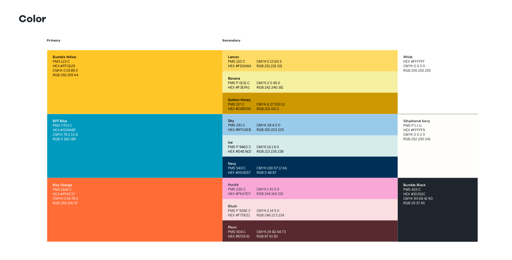
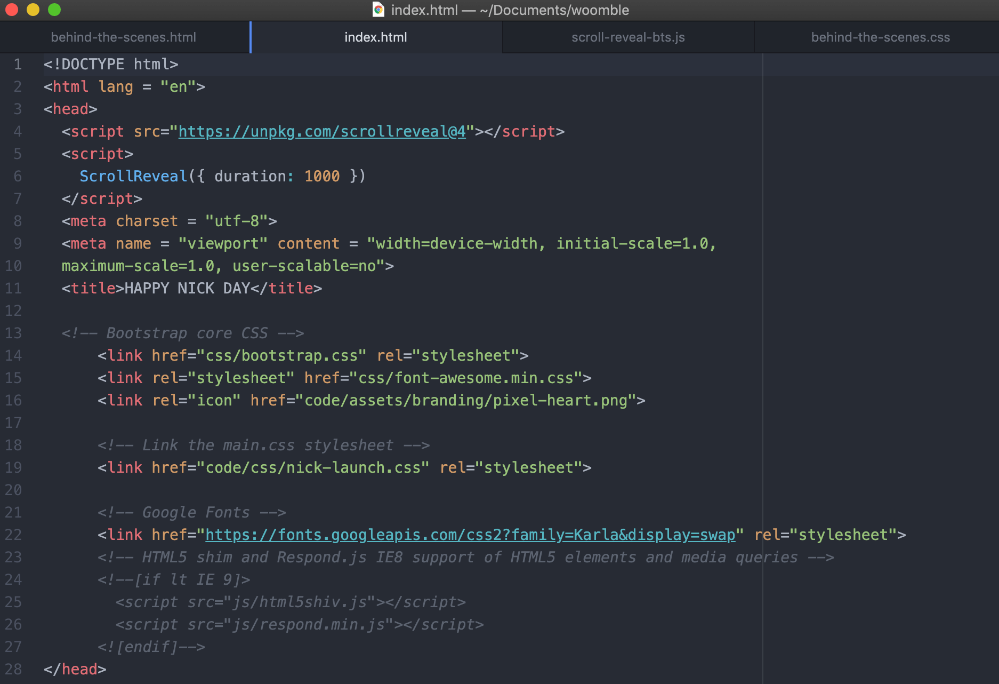
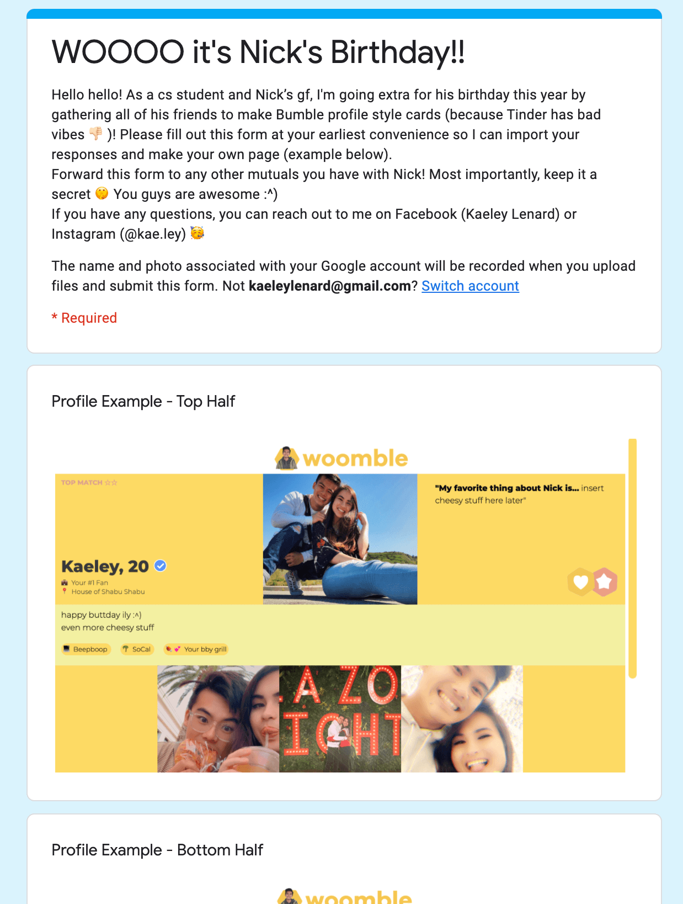
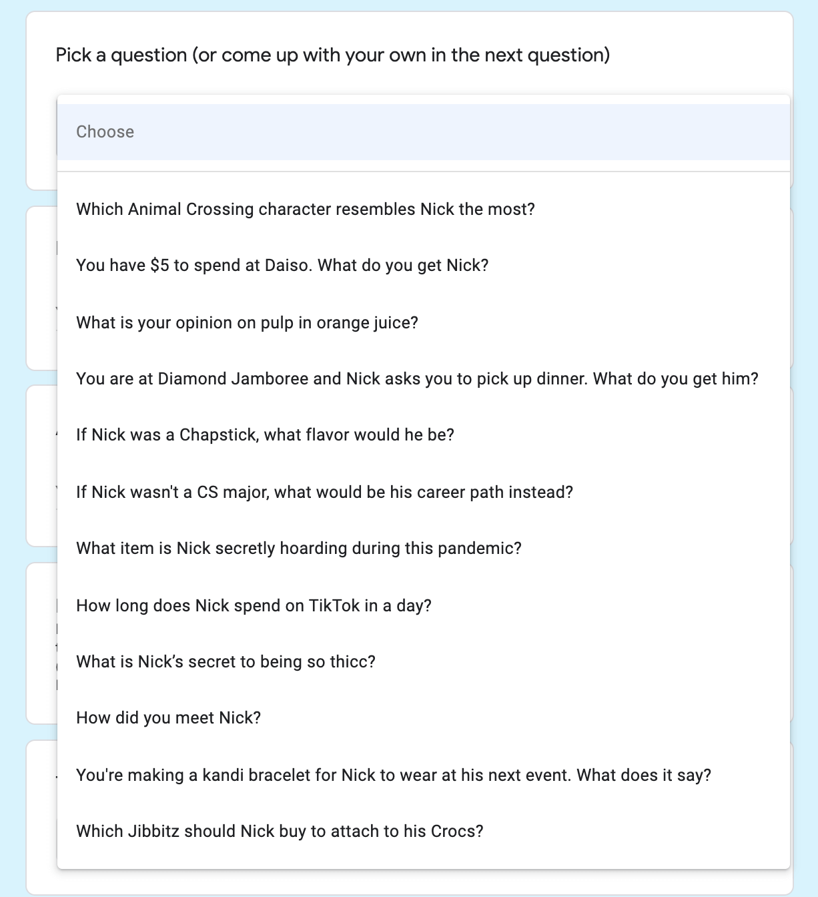
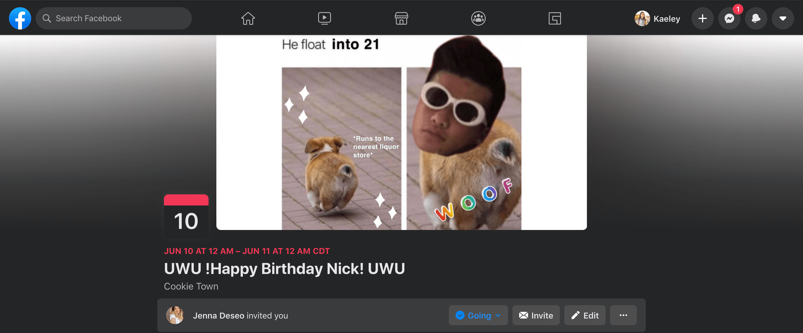
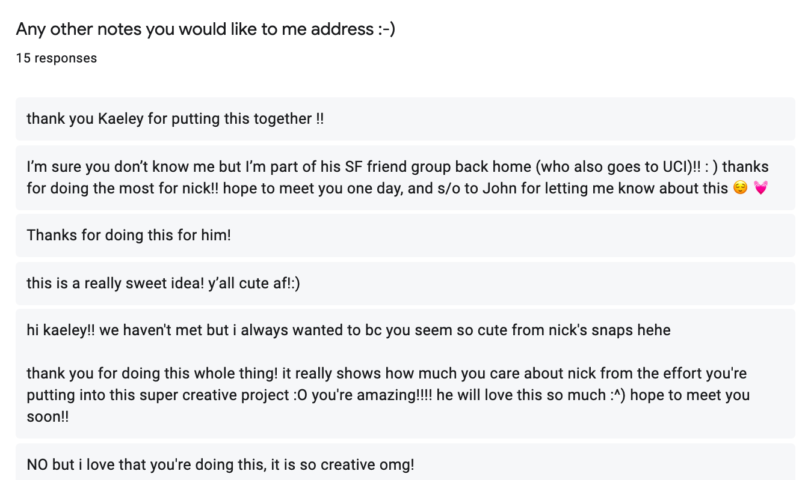
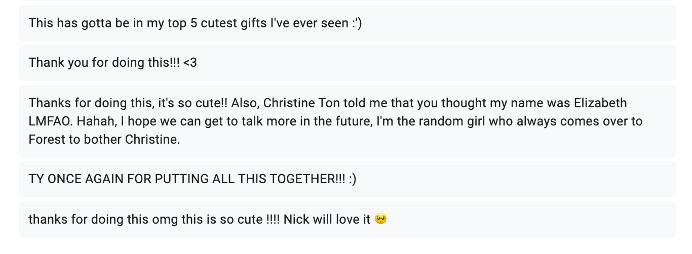
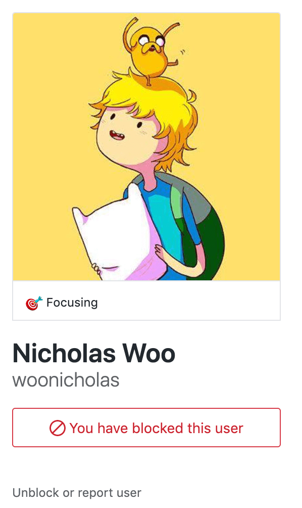
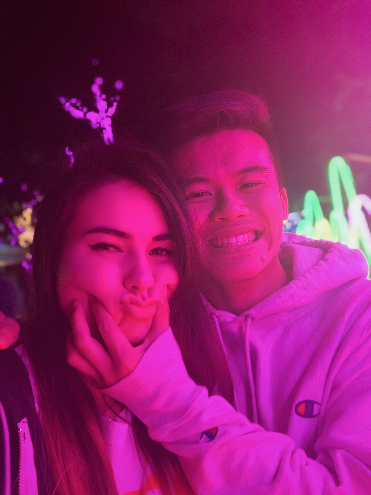

BEHIND THE SCENES
HOW I MADE WOOMBLE
| 1. First, I studied Bumble's design guidelines from a super fancy PDF. Highkey felt like a UX Designer doing this. |  | |
|---|---|---|
| 2. Next, I started building the website right after midterms. I created the launch screen and profile template that weekend. I also had to scroll through all of Nick's social media accounts to find the best pics of him in order to make those face cutouts 🤪. |  | |
| 3. Then, I reached out to hellaaaa people. I made a
Google Form so that each
friend could easily submit information for their Woomble profile. I
sent the form to mutuals and asked them to forward it to others. Shoutout to: - Kanami, for forwarding to Dragonboat - Cory, for forwarding to AMP - Victor, for forwarding to SF HS friends |   | |
| During Week 10, Jenna brought everybody together by making a Facebook group to promote the form even more. We are proud to say that this is officially the largest organized Nick Woo fan page. |
 | |
| I had a section on the bottom of the form in case anybody had any questions or suggestions for the site. Instead, I got an overwhelming amount of love from Nick's friends:') |
  | |
| 4. Assembling profiles! There must have been an easier way to do this (uhhh web frameworks??), but I just copy-pasted form responses to the profile template, compressed the images, and committed the profiles in incremental batches to GitHub. I also did like 3 things with JavaScript and I am proud of that xD I had to switch my repo from private to public to host to GitHub Pages, and I eventually blocked Nick on GitHub when he asked to follow me. No spoilers >:( |  | |
| 5. Finally, I'm going to send Nick the link for this on his birthday! I have appropriately shortened the link to tinyurl.com/thiccynicky. I really hope he enjoys it:) |  |